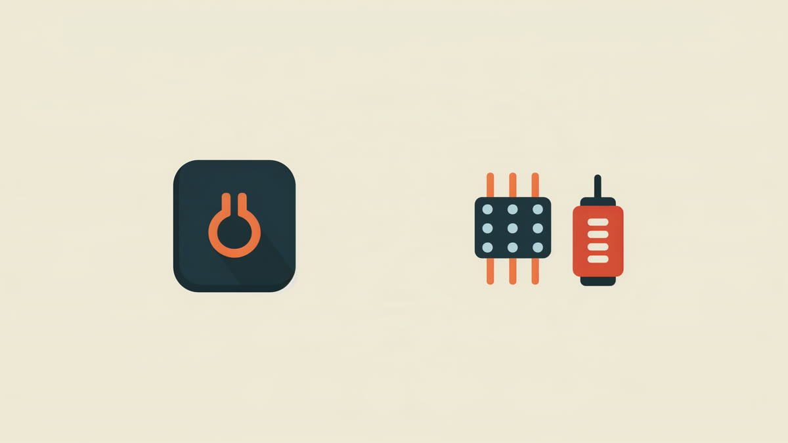
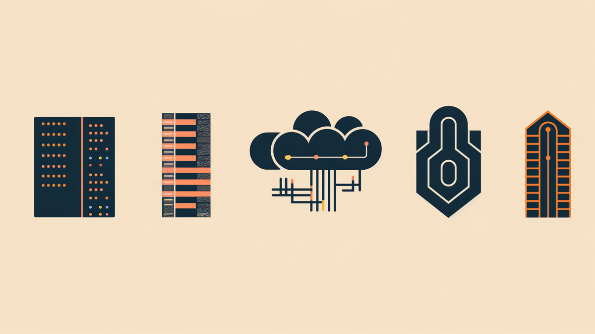
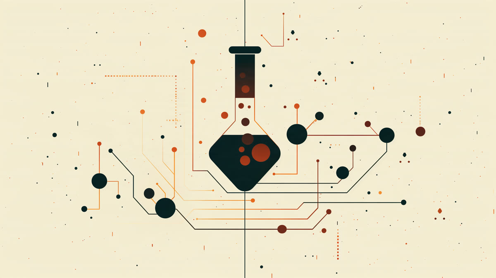
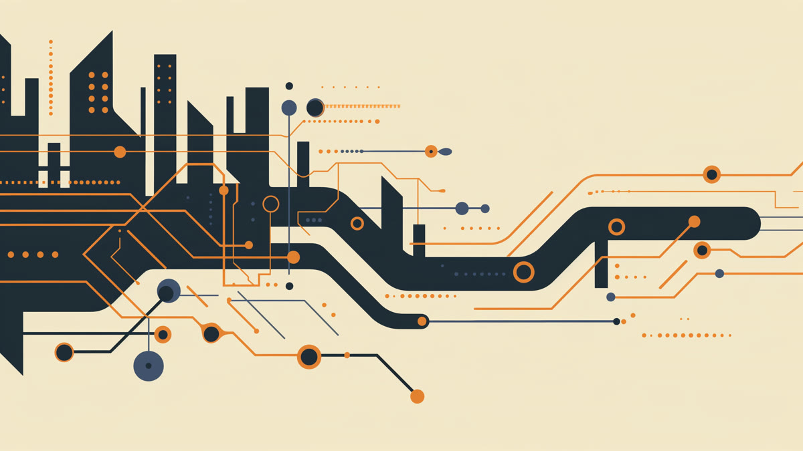

記事一覧

企業の「成長段階」はどう読むか(8)
米国株シリーズ1本目。Ambiq Micro(NYSE: AMBQ)を例に、売上+89.7%という伸び率と、まだ営業赤字という収益基盤の距離をどう読むかを整理します。

企業の「成長段階」はどう読むか——7社を並べて比較する
ニッポン高度紙工業・グロービング・さくらインターネット・サンワテクノス・テクノフレックス・大阪有機化学工業・ウシオ電機。日本株シリーズ7本の比較を1つの表にまとめ直した早見ページです。
企業の「成長段階」はどう読むか(7)
ウシオ電機(6925)を例に、「売上+27.7%・営業利益+410.5%」というV字回復の中身を、低い比較対象・M&A効果・本業改善の3つに分解して読む。シリーズ7本目・日本株編最終回です。

企業の「成長段階」はどう読むか(6)
大阪有機化学工業(4187)を例に、「営業利益は増益、純利益は減益」という一見矛盾した予想を7つの観点で読む。シリーズ6本目です。

企業の「成長段階」はどう読むか(5)
テクノフレックス(3449)を例に、「全社は増収増益」という見出しの裏にある事業別の明暗を7つの観点で読む。シリーズ5本目です。

企業の「成長段階」はどう読むか(4)
サンワテクノス(8137)を例に、「商社は成長株に見えない」という先入観を7つの観点で掘り崩す。前3回との対比シリーズ4本目です。
企業の「成長段階」はどう読むか(3)
さくらインターネット(3778)を例に、営業赤字を出しながら大規模先行投資を行う「投資回収前段階」の会社の成長段階を7つの観点で整理。前2回との対比シリーズ3本目です。

企業の「成長段階」はどう読むか(2)
グロービング(277A)を例に、事業モデルが変わりつつある会社の成長段階を7つの観点で整理。前回(素材メーカー)との対比シリーズ2本目です。
企業の「成長段階」はどう読むか
ニッポン高度紙工業(3891)を例に、成長段階を読む7つの観点を整理。個別銘柄の売買を推奨するものではなく、分析視点を学ぶケーススタディです。

いま、私の資産はどこにあるのか
米国株30%・投資信託30%・日本株20%・仮想通貨10%・現金10%。金額は伏せ、比率だけを残す最初の定点記録です。
証券口座はどう選ぶか
主要ネット証券5社を手数料・商品・ポイントの軸で比較。特定の1社を断定的に推さず、目的別の選び方を整理しました。
新NISAとiDeCo、どこが違うのか
非課税限度額・流動性・所得控除の違いを整理。「いつ使えるお金か」という軸で、目的別の考え方をまとめました。

不動産投資をはじめる前に、静かに整理しておきたい基礎知識
現物不動産・REIT・不動産クラウドファンディングの違い、利回りの見方、特有のリスク、基礎用語をまとめました。